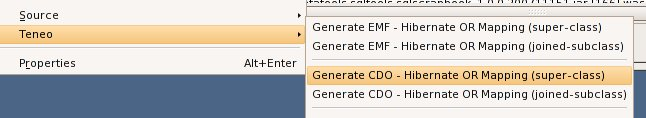

Teneo CDO Integration
- Some prerequisites
- CDO-Teneo and Offline mapping in hibernate file
- Runtime in-memory mapping
- Override Teneo standard behavior using Teneo's extension mechanism
Teneo can be used in combination with CDO. From the website: CDO is a 3-tiers solution for distributed shared models and a complete model repository server. When Teneo is used in combination with CDO then Teneo provides the automatic ecore - relational mapping capabilities while CDO provides the runtime hibernate layer.
This page only gives a short overview of the Teneo CDO integration. For more information regarding CDO please visit the CDO documentation website here
Teneo can be used in two modes with CDO: 1) offline mapping, 2) runtime in-memory mapping. Each of them is discussed separately
Some prerequisites
To work with the combination of CDO, Hibernate and Teneo you require the following plugins:
- The hibernate libraries. The recommended approach is to place the hibernate jar files in a separate plugin and set the Eclipse-Buddypolicy of this plugin to dependent, see also the Teneo install page regarding this: here
- The standard CDO plugins
- The CDO Hibernate plugin: org.eclipse.emf.cdo.server.hibernate.
- When you use the runtime in-memory mapping then also the following Teneo plugins are required: 1) org.eclipse.emf.teneo, 2) org.eclipse.emf.teneo.annotations, 3) org.eclipse.emf.teneo.hibernate.mapper and the CDO plugin: org.eclipse.cdo.server.hibernate.teneo.
CDO-Teneo and Offline mapping in hibernate file
In this scenario the hibernate mapping file is generated during development time. The advantage of this approach is that there is no runtime dependency on Teneo plugins.
The hibernate mapping can be generated by right clicking on one or more ecore files and selecting the correct menu in the Teneo menu (see below). Note that for this generation to work the project containing the ecore files should have the org.eclipse.emf.teneo.hibernate plugin set as a dependency!.

After selecting this option a cdo_hibernate.hbm.xml should be present in the same directory as the ecore file.
Place the generated mapping file somewhere in your classpath. Note that you often have to explicitly select the file in the build.properties of your plugin to let it be copied to the build directory!
Configure CDO to use the mapping file
To actually use the mapping file and the CDO Hibernate layer the only thing which needs to be done is create a specific store for your repository. The HibernateFileMappingProvider expects the path (in your classpath) to the generated mapping file:
IHibernateMappingProvider mappingProvider = new HibernateFileMappingProvider("/mappings/product.hbm.xml");
IStore store = new HibernateStore(mappingProvider);
Runtime in-memory mapping
In this scenario the mapping is done when the CDO layer initializes. The advantage of this approach is that you can dynamically add epackages at runtime. In this setup you also require the teneo plugins as described above.
For runtime mapping the configuration is done at runtime. Teneo has a number of options and settings which can be controlled by options. When Teneo is used in combination with CDO then these options can be passed as properties to the repository when the repository is created.
The following source code illustrates this, in this example the teneo properties are read from a separate properties file:
@Override
public IRepository createRepository(String name, Map<String, String> testProperties)
{
setLogging();
Map<String, String> props = new HashMap<String, String>();
props.put(Props.PROP_OVERRIDE_UUID, "f8188187-65de-4c8a-8e75-e0ce5949837a");
props.put(Props.PROP_SUPPORTING_AUDITS, "false");
props.put(Props.PROP_SUPPORTING_REVISION_DELTAS, "false");
props.put(Props.PROP_VERIFYING_REVISIONS, "false");
props.put(Props.PROP_CURRENT_LRU_CAPACITY, "10000");
props.put(Props.PROP_REVISED_LRU_CAPACITY, "10000");
addHibernateTeneoProperties(props);
// override with the test properties
props.putAll(testProperties);
return CDOServerUtil.createRepository(name, createStore(), props);
}
private void addHibernateTeneoProperties(Map<String, String> props)
{
try
{
final Properties teneoProperties = new Properties();
teneoProperties.load(getClass().getResourceAsStream("/app.properties"));
for (Object key : teneoProperties.keySet())
{
props.put((String)key, teneoProperties.getProperty((String)key));
}
}
catch (Exception e)
{
throw WrappedException.wrap(e);
}
}
Then the creation of the HibernateStore is done as follows. Note the specific TeneoHibernateMappingProvider, this class can be found in the org.eclipse.cdo.server.hibernate.teneo plugin.
@Override
public IStore createStore()
{
IHibernateMappingProvider mappingProvider = TeneoUtil.createMappingProvider();
return new HibernateStore(mappingProvider);
}
After this the repository can be used as a normal CDO repository while it works through Hibernate on the relational database.
Override Teneo standard behavior using Teneo's extension mechanism
Teneo's standard behavior can be overridden through the Teneo extension mechanism (see here). The extension manager can be obtained from the TeneoHibernateMappingProvider (cast the mappingProvider to TeneoHibernateMappingProvider).